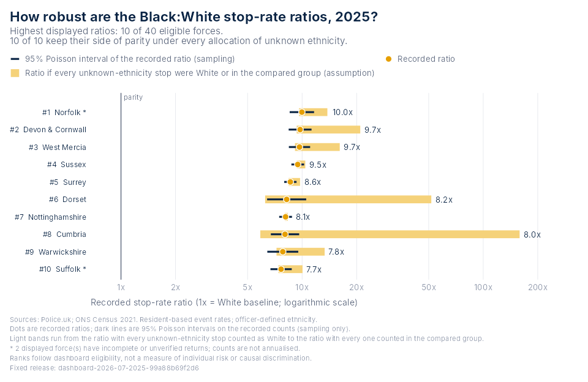

Reproducible stop and search evidence for England and Wales, in R.
BlackThriveSS bundles a catalogue of fixed, checksummed datasets extracted from the Black Thrive stop and search dashboard (force, council and national tables from 2018 onwards, with monthly reporting coverage) and the tools to turn them into evidence that can be checked: the dashboard’s ranking chart for any year and group, bounds on every ratio under missing ethnicity, rank intervals, trends and year-on-year change with coverage attached, plain statements and HTML or Word briefings for one force or council, links that carry a chart to and from the dashboard website, and saved views that replay any chart with identical numbers. Everything runs offline after installation.
The snapshots were extracted from btg_stop_search_v9. They use the local dashboard’s July 2026 Police.uk source release, built in September 2026, and Census 2021 populations. The package does not query the live website; it and its examples run offline without Shiny, Python or a database.
Install from GitHub
You need R 4.1.0 or newer and an internet connection for installation. Run this in a fresh R session or the RStudio console:
if (!requireNamespace("remotes", quietly = TRUE)) {
install.packages("remotes", repos = "https://cloud.r-project.org")
}
remotes::install_github(
"BlackThrive/BlackThriveSS",
repos = "https://cloud.r-project.org",
upgrade = "never",
build_vignettes = FALSE
)
library(BlackThriveSS)This installs the current development version from the public repository and its required dependencies. You do not need to clone the repository, download the dashboard or create a GitHub account. BlackThriveSS is not on CRAN yet; install.packages("BlackThriveSS") is not an installation route at present.
The remotes installer skips building the tutorial here, so Pandoc and LaTeX are not needed. The package contains no compiled code; if R needs to install dependencies from source, those dependencies may require build tools. On Windows and macOS, use available CRAN binary dependencies. Restart R before updating a loaded copy of BlackThriveSS, then rerun the installation block.
An offline alternative is the installation ZIP that dev/build-release.R writes to artifacts/: extract it and follow START-HERE.txt.
Reproduce an example chart
After installation, copy this into R. It reads the bundled 2025 Black:White stop-rate comparison and draws the ten highest dashboard-eligible force ratios. The data release is explicit so the example does not switch to a newer snapshot when the package is updated.
library(BlackThriveSS)
x <- btg_get_data(
"force_disparity",
years = 2025,
release = "dashboard-2026-07-2025-99a88b69f2d6"
)
p <- btg_plot_disparity(x, n = 10, ranking = "highest")
print(p)The plot appears in RStudio’s Plots pane or R’s graphics window. It uses recorded stop counts and Census 2021 resident populations. The line at 1 marks equal recorded rates; an asterisk marks incomplete or unverified monthly returns. These are descriptive event-rate ratios, not individual probabilities or evidence of a causal effect. All data needed for this example are bundled, so it works offline after installation.
Save the chart and inspect the numbers behind it:
ggplot2::ggsave(
"black-white-disparity-2025.png", plot = p,
width = 11.5, height = 7.5, units = "in", dpi = 160
)
btg_figure_data(p)[c("force_label", "ratio", "coverage_status")]
btg_validate(x)The PNG is saved in your current working directory (getwd()). Validation reports the integrity and consistency checks; each passed value should be TRUE. See Save and reproduce the chart to share a machine-readable view tied to this exact data release.
Who it is for
Researchers and analysts get tidy data frames with provenance, the documented calculations behind every number, sensitivity and stability analyses that keep sampling variability apart from assumptions, ggplot objects they can edit, and views and exports that make a result reproducible by someone else.
Policy, scrutiny and community users get one call that writes the evidence for their area as careful plain statements, charts with the area highlighted, a briefing with the methods and their limits attached, and a glossary with one definition per term.
The catalogue
library(BlackThriveSS)
btg_datasets()
# dataset level from to groups coverage
# force_disparity force 2025 2025 Black TRUE
# force_ethnicity_year force 2018 2026 Asian, Black, Mixed, Other TRUE
# national_year national 2018 2026 FALSE
# national_month_ethnicity national 2018 2026 Asian, ..., White, Unknown FALSE
# council_ethnicity_year council 2018 2026 Asian, Black, Mixed, Other FALSE
# hit_rate_ethnicity_year national 2018 2026 Asian, ..., White, Unknown FALSE
# section60_force_year force 2018 2026 Asian, ..., White, Unknown TRUE
y <- btg_get_data("force_ethnicity_year", groups = "Black", years = 2022:2025)
y$data[c("force_label", "year", "ratio", "rank", "coverage_status")]
btg_get_data("council_ethnicity_year", council = "E09000022")$data # Lambeth
btg_get_data("national_year")$dataEvery dataset is read the same way, verified against its SHA-256 checksum, and carries the release’s provenance in $metadata. The 2025 Black rows of force_ethnicity_year reproduce force_disparity exactly, which the tests assert. The dashboard verifies monthly submissions only inside a recent window, so earlier years are unverified, which is not the same as missing; a missing return is always NA, never zero. btg_validate() audits any dataset’s integrity, totals and calculations.
Charts
| Function | Draws |
|---|---|
btg_plot_disparity() |
The dashboard’s force ranking for any year and group, with intervals, coverage marks and a highlighted force |
btg_plot_sensitivity() |
The same forces with their sampling interval and the range of the ratio under every allocation of unknown-ethnicity stops |
btg_plot_trend() |
A force’s or council’s ratios or rates over the years, national monthly stops or shares, national totals and rates, outcome-linked search rates, Section 60 searches |
btg_plot_change() |
A dumbbell chart of the largest changes in ratio between two years |
Each chart is an ordinary ggplot. btg_figure_data() returns the table behind it, btg_save_view() pins it to a release and btg_from_view() replays it. Groups keep fixed colours from btg_group_colours().
btg_plot_sensitivity(x)
btg_plot_trend(btg_get_data("force_ethnicity_year", force = "metropolitan"))
btg_plot_change(btg_get_data("force_ethnicity_year"))
How robust is a comparison?
Three kinds of uncertainty are reported separately and never combined: sampling variability, the allocation of stops with no recorded ethnicity, and missing monthly returns.
s <- btg_sensitivity(x) # ratio_min, ratio_max, parity_direction, rank_best, rank_worst
r <- btg_rank_stability(x) # rank_lower, rank_upper, prob_top from seeded Poisson draws
ch <- btg_change(btg_get_data("force_ethnicity_year", groups = "Black")) # change, interval, coveragebtg_robustness_summary() reduces all of this to one row per year and group, and btg_source_status() checks the live Police.uk availability feed for months published since the snapshot and for force-months added or withdrawn inside its verified window, which is the starting point for an audit of revisions across releases. vignette("robustness", package = "BlackThriveSS") works through all of them.
Brief one force or council
p <- btg_profile(force = "metropolitan")
p # plain statements, each with its qualification
p$comparisons # the numbers behind them
btg_report(force = "metropolitan", file = "metropolitan-2025.html")
btg_report(council = "E09000022", file = "lambeth-2025.docx")The briefing is a self-contained HTML page, or a Word document: statements, charts with the area highlighted, tables, monthly coverage, national context, how to read it, and the code and citations that reproduce every figure. It needs the rmarkdown package and Pandoc, which RStudio and Positron include. The same template appears in those editors as “BlackThriveSS briefing”. See vignette("briefing", package = "BlackThriveSS").
Round-trip with the dashboard website
q <- btg_plot_disparity(btg_get_data("force_ethnicity_year"),
year = 2024, group = "Asian", highlight = "metropolitan")
url <- btg_dashboard_url(q)
url
back <- btg_from_url(url)
identical(btg_figure_data(back), btg_figure_data(q))
#> TRUEbtg_dashboard_url() returns a link to the Disparity page at the chart’s year, group and selected force; use browseURL(url) to open it. btg_from_url() reproduces supported standard-group Disparity charts from links copied from the website’s Share view button, in either link form the dashboard has used, and warns when the link was made from a different source month than the snapshot. A link selects a view; the website recomputes from its current release, while the chart in R stays pinned to the bundled snapshot.
Explore and customise
Using x and p from the example above:
x$data # Ordinary data frame: all 44 forces
btg_figure_data(p) # Original chart table, in display order
btg_coverage(x) # 528 monthly reporting observations
btg_metadata(x)$source # Source release, retrieval time and checksum
btg_citation(x)Full function help is installed: use help(package = "BlackThriveSS") or ?btg_plot_disparity. The getting-started tutorial includes discovery, chart customisation, missing returns, saved-view replay, validation and troubleshooting. The quick installation above does not build the installed HTML vignettes. In a later R session, simply run library(BlackThriveSS) again; no project-specific library path is needed.
Customise the returned ggplot or inspect one force:
p + ggplot2::labs(title = "Recorded Black:White stop-rate comparison")
met <- btg_get_data(force = "metropolitan")
met$data[c("black_stops", "white_stops", "black_population",
"white_population", "ratio", "coverage_status")]
btg_plot_disparity(x, ranking = "lowest")
btg_plot_disparity(x, ranking = "closest")The data object stores data, coverage, metadata and selection explicitly. Analyse or transform x$data freely in your own workflow. The reproduction functions reject altered evidence or provenance so custom calculations cannot accidentally claim to be the fixed dashboard result.
Take the evidence with you
btg_export(btg_get_data(force = "metropolitan"), "metropolitan-2025.csv")
# writes the CSV, a coverage CSV and a JSON sidecar with release, checksums,
# selection, citation and limitations
btg_glossary()
btg_citation(x)Save and reproduce the chart
# Use a temporary path so this example can be rerun safely.
# Replace it with a project file path to keep or share the view.
view_file <- tempfile(fileext = ".json")
btg_save_view(p, view_file)
recreated <- btg_from_view(view_file)
stopifnot(identical(btg_figure_data(p), btg_figure_data(recreated)))
recreated
# This example is installed with the package:
view <- system.file("examples", "disparity-2025.json", package = "BlackThriveSS")
btg_from_view(view)The JSON file pins the data release, payload checksums, chart version, selection and settings. Unknown releases, schemas or checksums fail explicitly. Files never execute R code or trigger downloads. Numerical reproduction is supported; pixel-identical rendering requires the same graphics environment. Custom ggplot styling and layers are not stored in the view.
What is reproduced
The first example reproduces the force selection, ratios and ordering from the dashboard Disparity page’s 2025 / Standard groups / Black / Compare the distribution view. Highest, lowest and closest-to-parity orderings are supported. The output uses the dashboard’s colours in an editable static ggplot, with additional coverage labels and optional selected-force highlighting. It does not reproduce Plotly interactions or previous-year change annotations. The force_ethnicity_year dataset supports other bundled years and groups, as in the dashboard-link example above.
Forty forces have ratios eligible under the dashboard’s display rules. British Transport Police and City of London have no displayed resident-based rate. Greater Manchester and Gwent have no submitted 2025 months in this snapshot; their counts remain NA, not zero. Partial returns remain visible and are marked with *; eligibility is not proof of complete reporting.
These are event rates using fixed 2021 resident populations, not probabilities that an individual will be stopped. Officer-defined ethnicity and Census self-reported ethnicity are different classifications. The table does not separate vehicle-only searches, so unknown ethnicity is not a pure non-response measure. Ratios, ranks and changes are descriptive and do not establish discrimination. See the installed NOTES/data-dictionary.md, btg_glossary() and the explicit metadata for definitions and limits.
Development and verification
roxygen2::roxygenise()
testthat::test_local()From a shell, with R available:
Rscript --vanilla dev/verify-dashboard.R ../btg_stop_search_v9
Rscript --vanilla dev/reproduce.R
R CMD build .
R CMD check --as-cran BlackThriveSS_*.tar.gzdev/verify-dashboard.R compares the package’s tables with the dashboard’s own calculation functions, including all eligible ratios and all three ranking orders. It evaluates only the dashboard’s calculation functions and does not start the website or alter its data. Tests use hand-calculated fixtures, cover missing returns, zero counts and excluded denominators, reject changed provenance, and exercise saved-view replay, bounds, rank intervals, change, trends, profiles, exports and the briefing. Parity validates reproduction, not the original data’s completeness or all of the dashboard’s statistical assumptions.
btg_validate() checks the release checksums, monthly-to-annual totals, ethnicity subtotals and stored estimates. These checks establish internal consistency, not complete police reporting or the validity of every statistical assumption.
data-raw/build-snapshot.R and data-raw/build-catalogue.R create content-identified releases from the dashboard files. Existing release directories are never overwritten. Input and output checksums are recorded in the manifest. Updating the source or method requires a new release; it must not silently change an archived chart.
Build, validate and prepare for CRAN
The maintainer workflow is:
Rscript --vanilla dev/build-release.R
Rscript --vanilla dev/check-release.RBuilding the executed HTML tutorials needs knitr, rmarkdown and Pandoc. The local check uses rcmdcheck and the R toolchain, including LaTeX for the PDF manual. Those are maintainer tools, not runtime requirements for users. The build writes a source archive, checksummed manifest and installation ZIP. The check records the exact archive SHA-256, R version, errors, warnings and notes.
See CRAN readiness for the evidence and remaining release gates, and Contributing for development rules. The GitHub Actions checks cover Windows, macOS, Linux and multiple R versions. Consult the workflow runs for the result on a specific commit; these checks do not imply CRAN acceptance.
The package is publicly available on GitHub and remains a development package. It has not been submitted to CRAN, and the Use in R dashboard button is deferred. Report problems through GitHub issues, including your R version, package version and a small reproducible example.
Attribution
Code: MIT, Black Thrive Global. Public aggregate data: Police.uk and Office for National Statistics, Census 2021, via the dashboard preparation pipeline. Contains public sector information licensed under the Open Government Licence v3.0.
Source documentation: Police.uk and Census 2021.